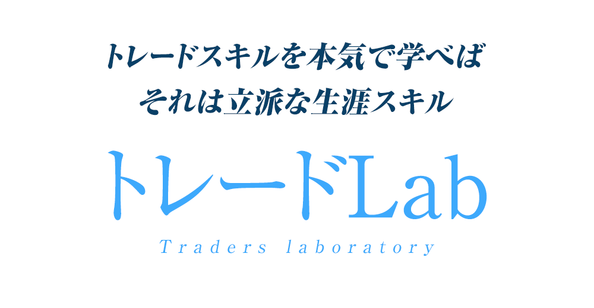
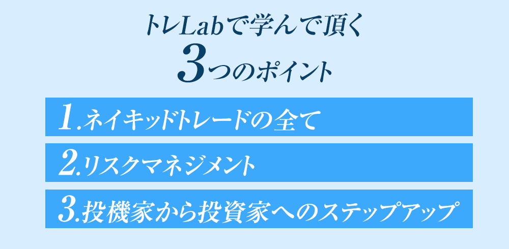
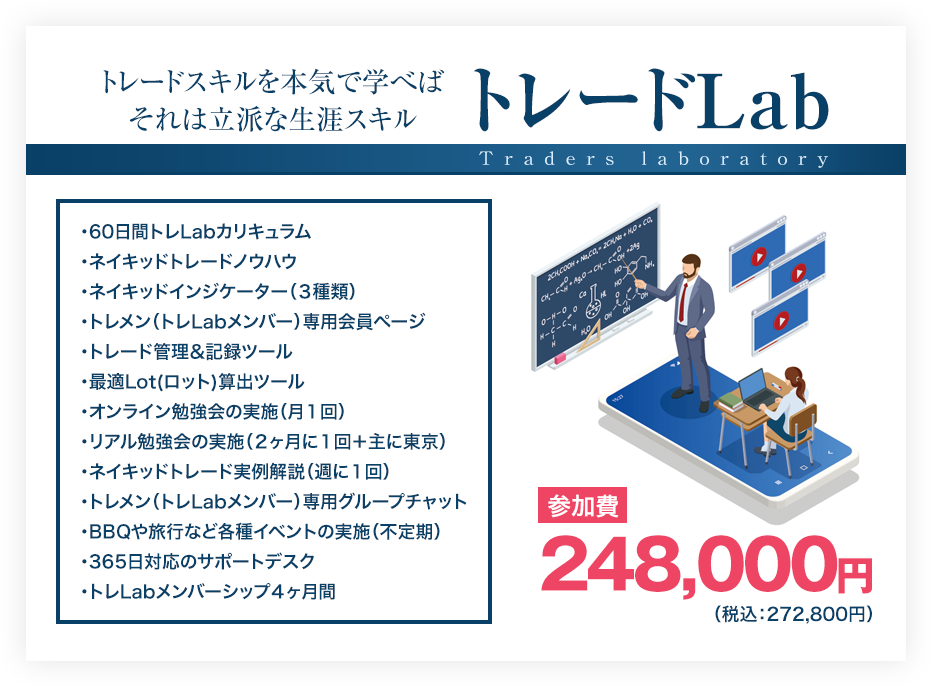

改めましてこんにちは。
トレードLabの所長、岩本です。
トレLabでは僕が長年培ってきたトレードノウハウ、ロジック、スキルの集大成とも言える「ネイキッドトレード（出来高トレード）」の全てをお伝えします。
ネイキッドは「高利益率、高勝率、低リスク」を実現できている方法論なので、身につけて頂くことであなたのトレードは劇的に変化するとお約束します。
その上で・・・
ネイキッドはあくまで少ない資金で大きな利益を目指す手法（元本7万円から出来る方法で月利12％平均）ですが、トレードである以上は「投機」です。
ずっと「投機だけ」では、常にビクビクと何かに怯えながら続けていくことになってしまいかねないので、次のステージである「投資」にステップアップしてもらう事を目標としています。
そういった状態を世間では「セミFIRE」と呼びますが、そこを目指して共に進む仲間、二人三脚で歩むチームこそ、トレLabの本当の目的です。
セミFIREを目標に、トレLabで多くの仲間と共に学び、ステージアップを目指していきましょう！
01
出来高を元にトレードする手法
ファンダメンタルズでもシステムでもテクニカルでもない、独自の方法論に基づくトレード手法となります。
02
デイトレード
ポジション保有時間は数分〜数時間のいわゆるデイトレですが、日をまたぐことはありませんし、目標とする損切り＆利確ポイントに届かなくても規定時間になれば決済を終えます。
つまり、長期間保有することは無い手法なので、外的要因にさらされる可能性が減るので、その分リスクも低くなります。
03
リスクリワード：１対７
ワントレード毎に目標値とする利確ポイントと、損失を限定する損切りポイントを設定しますが、その設定リスクリワード（リスクと利益のバランス）は、平均すると「１対７」くらいです。
これは「損失１万円に対して利益は７万円」ということなので、負けトレードが７回続いても１回勝てばプラマイゼロになる…というバランスです。
そうなると次に重要なのは「勝率」ですが・・・
04
勝率：71.56％
ネイキッドの勝率は実に７割を超えています。これは約３年間の実トレードの平均も、10年間の過去検証でも同様の数字なので、恐らく大きくブレることはあまり考えられません。
高勝率＆高リスクリワードという絶対的なエッジ（強み）がネイキッドには備わっているわけですね。
05
トレード回数：平均23回／月間
ネイキッドは基本的には１日３回トレードチャンスがあります（午前９時、午後１５時、午後１６時）が、その全てでトレードするわけではなく勝てそうなタイミングでしかエントリーしません。
エントリーするかどうかの選別方法はマニュアルでお伝えしますが、結果的に１日１回くらい・・・月間２３回くらいが平均トレード回数になります。
06
通貨ペアは「ユーロドル」のみ
複数の通過ペアをウォッチする必要はなく、ネイキッドでは「ユーロドル」のみに絞ってトレードするので複雑化したりすることがなく、非常にシンプルかつ分かりやすいトレード手法です。
07
インジケータでサポート
ネイキッドでは、まず大きな方向性として「今日はロング目線かショート目線か」を決めてから、エントリーすべきかどうかや、細かなエントリータイミングや、利確＆損切りラインを決めていきます。
その最初の１歩である「大きな方向性」に関しては、オリジナルインジケータ（システムのようなモノ）をご提供しますので、このインジケータをセットして頂ければ自動的に「ロング目線かショート目線か」が表示されるので迷いません。
08
最低トレード資金は７万円から
リスクマネジメントの関係で１万通貨（１ロット）に対して７万円の資金を推奨していますので、最低トレード資金は７万円以上を推奨しています。
09
月間利回り平均１１％
単利運用での月利は過去平均で１１％を記録しています。
トレードLabカリキュラム
〜8週間（60日）講座〜
１週目
トレードの役割と目指すべきゴール
相場の作られ方と最もコアなポイントとは
相場を動かす絶対的な指標とは
最も大きな出来高を持っている機関とは
世界トップの出来高を誇る銀行１０行
相場の方向性を決める超大口機関たち
超大口機関の方向性に乗っかるトレードとは
２週目
リスクマネジメントとは
単利か複利か？
複利とは負けも小さくする方法である
ポジションサイジングとは
Lotベースか総資金ベースか？
日本の証券会社ではLotベース
シミュレーションしてみよう！
３週目
証券口座の開設方法
トレーディングビューの使い方
トレード記録をつけるべき３つの理由
トレード記録の付け方
４週目
ネイキッドトレードとは
ネイキッドAとは
ネイキッドBとは
ネイキッドCとは
５週目
ネイキッドインジケータとは
ネイキッドインジの受け取り方
ネイキッドインジの設定方法
ネイキッドインジA〜Cの各種設定
ネイキッドトレードの解説
トレード事例を元に解説
６週目
デモで実際にトレードしてみよう
デモからはじめる理由
７週目
慣れてきたらライブ（本番）に移行しよう
トレード事例を元に深く理解しよう
８週目
投機から投資へ
投機と投資の違いとは
トレードの限界を知る
トレードでいくら勝てば投資に移行するか
流動性と法律と規制とトレード
投資の原理原則
アクセラレーションとは
投資における目標設定
投機と投資のバランス
トレLabメンバーシップとは
トレLabメンバーシップとはトレLabカリキュラムを修了したメンバーの為のコミュニティです。
ネイキッドの実例を元に解説しつつ、より理解を深めていってもらう事を主としていますが・・・
同時に様々なイベントを通して参加メンバー間のコミュニケーションをはかり、大人になってから作る友達・・・それを実現することを１番の目的としています！
つまり「ネイキッドトレードの学習」や「ネイキッドの応用」を主とした仲間たちのコミュニティであり、そんな仲間たちと一緒に人生を豊かにする為の活動をしていく場所が「トレLabメンバーシップ」です。
トレLabメンバーシップの主な活動は以下の通りです。
１.
オンライン勉強会の実施
（月１回）
２.
リアル勉強会の実施
（２ヶ月に１回＋主に東京）
３.
ネイキッドトレード実例解説
（週に１回）
４.
トレメン
（トレLabメンバー）
専用グループチャット
５.
BBQや旅行など各種イベントの実施
（不定期）
トレードLab提供物一覧
01
60日間トレLabカリキュラム
02
ネイキッドトレードノウハウ
03
ネイキッドインジケーター
（３種類）
04
トレメン
（トレLabメンバー）
専用会員ページ
05
トレード管理＆記録ツール
06
最適Lot
(ロット)
算出ツール
07
オンライン勉強会の実施
（月１回）
08
リアル勉強会の実施
（２ヶ月に１回＋主に東京）
09
ネイキッドトレード実例解説
（週に１回）
10
トレメン
（トレLabメンバー）
専用グループチャット
11
BBQや旅行など各種イベントの実施
（不定期）
12
365日対応のサポートデスク
＋
13.
トレLabメンバーシップ４ヶ月間

お申し込みはこちら
最大24回分割まで対応！
月々約11,366円
でご参加いただけます
※VISA / Master / JCB / AMEX / ダイナース
がご利用いただけます
規約入れる場合、ここに入れる
規約に同意して参加する